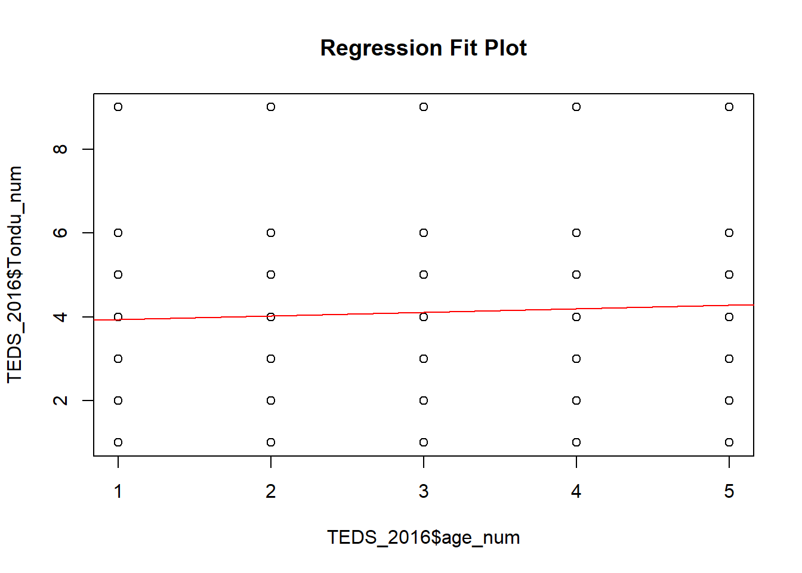
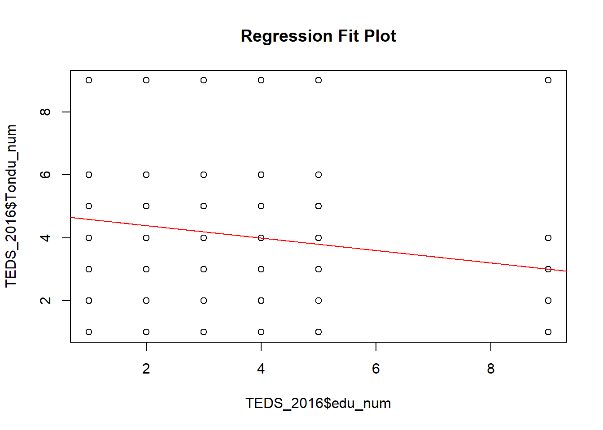
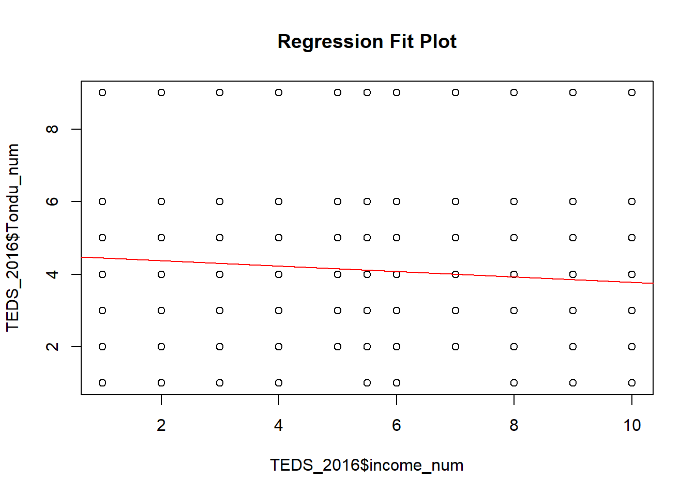

library(haven)
## Load the TEDS2016 DatasetAssignment 3: Machine Learning Exercise
Multiple Regression and Regression Plots Using TEDS2016
Portfolio & coursework in data visualization and analytics.
Overview
This assignment applies basic machine learning and regression concepts using the TEDS2016 dataset. The exercise follows the assigned lab instructions by loading the dataset, estimating a multiple regression model, creating a custom regplot() function, and using the function to examine the relationship between the dependent variable and selected predictors.
The assigned predictors are age, education, and income. The assignment also asks what problem appears when plotting the dependent variable and why this problem occurs.
Load Packages
TEDS_2016 <- haven::read_dta(
"https://github.com/datageneration/home/blob/master/DataProgramming/data/TEDS_2016.dta?raw=true"
)Inspect the Dataset
The dataset loaded successfully. It contains 1,690 observations and 54 variables.
dim(TEDS_2016)[1] 1690 54names(TEDS_2016) [1] "District" "Sex" "Age" "Edu"
[5] "Arear" "Career" "Career8" "Ethnic"
[9] "Party" "PartyID" "Tondu" "Tondu3"
[13] "nI2" "votetsai" "green" "votetsai_nm"
[17] "votetsai_all" "Independence" "Unification" "sq"
[21] "Taiwanese" "edu" "female" "whitecollar"
[25] "lowincome" "income" "income_nm" "age"
[29] "KMT" "DPP" "npp" "noparty"
[33] "pfp" "South" "north" "Minnan_father"
[37] "Mainland_father" "Econ_worse" "Inequality" "inequality5"
[41] "econworse5" "Govt_for_public" "pubwelf5" "Govt_dont_care"
[45] "highincome" "votekmt" "votekmt_nm" "Blue"
[49] "Green" "No_Party" "voteblue" "voteblue_nm"
[53] "votedpp_1" "votekmt_1" Select Variables
For this assignment, I use Tondu as the dependent variable. The independent variables are age, education, and income.
table(TEDS_2016$Tondu, useNA = "ifany")
1 2 3 4 5 6 9
27 180 546 328 380 108 121 summary(TEDS_2016$Age) Min. 1st Qu. Median Mean 3rd Qu. Max.
1.0 2.0 3.0 3.3 5.0 5.0 summary(TEDS_2016$Edu) Min. 1st Qu. Median Mean 3rd Qu. Max.
1.000 2.000 3.000 3.334 5.000 9.000 summary(TEDS_2016$income) Min. 1st Qu. Median Mean 3rd Qu. Max.
1.000 3.000 5.500 5.324 7.000 10.000 Prepare Variables
The variables are converted into numeric form for the regression exercise.
TEDS_2016$Tondu_num <- as.numeric(TEDS_2016$Tondu)
TEDS_2016$age_num <- as.numeric(TEDS_2016$Age)
TEDS_2016$edu_num <- as.numeric(TEDS_2016$Edu)
TEDS_2016$income_num <- as.numeric(TEDS_2016$income)Multiple Regression Model
The multiple regression model estimates the relationship between the dependent variable Tondu and the predictors age, education, and income.
model1 <- lm(Tondu_num ~ age_num + edu_num + income_num, data = TEDS_2016)
summary(model1)
Call:
lm(formula = Tondu_num ~ age_num + edu_num + income_num, data = TEDS_2016)
Residuals:
Min 1Q Median 3Q Max
-3.7393 -1.1787 -0.3877 1.0378 6.1043
Coefficients:
Estimate Std. Error t value Pr(>|t|)
(Intercept) 5.18243 0.21369 24.252 < 2e-16 ***
age_num -0.05021 0.03567 -1.408 0.1594
edu_num -0.20090 0.03433 -5.853 5.8e-09 ***
income_num -0.04137 0.01641 -2.521 0.0118 *
---
Signif. codes: 0 '***' 0.001 '**' 0.01 '*' 0.05 '.' 0.1 ' ' 1
Residual standard error: 1.745 on 1686 degrees of freedom
Multiple R-squared: 0.03482, Adjusted R-squared: 0.0331
F-statistic: 20.28 on 3 and 1686 DF, p-value: 6.574e-13Create the regplot() Function
The function below combines lm(), plot(), and abline() to create a scatterplot with a fitted regression line.
regplot <- function(x, y) {
fit <- lm(y ~ x)
plot(
x, y,
xlab = deparse(substitute(x)),
ylab = deparse(substitute(y)),
main = "Regression Fit Plot"
)
abline(fit, col = "red")
}Regression Plot: Age
regplot(TEDS_2016$age_num, TEDS_2016$Tondu_num)
Regression Plot: Education
regplot(TEDS_2016$edu_num, TEDS_2016$Tondu_num)
Regression Plot: Income
regplot(TEDS_2016$income_num, TEDS_2016$Tondu_num)
What Is the Problem?
The main problem is that the dependent variable, Tondu, is not a continuous numerical variable. It is a categorical or ordinal variable with a limited number of response categories. The frequency table shows that Tondu has only a small number of categories rather than a wide continuous range of values.
Because of this, the scatterplots do not show a smooth continuous relationship. Instead, the dependent variable appears in horizontal bands because many respondents share the same category values.
Why Does This Problem Happen?
This problem happens because Tondu represents categories of political preference. Ordinary least squares regression assumes that the dependent variable is continuous and that the relationship between the independent and dependent variables can be represented reasonably with a straight line.
When the dependent variable has only a few ordered categories, a linear regression plot may be misleading. The red regression line may suggest a continuous relationship, but the actual outcome is categorical or ordinal.
What Can Be Done to Improve Prediction?
Several changes could improve prediction.
First, the model should use a method that better matches the structure of the dependent variable. If Tondu is treated as an ordered outcome, an ordinal logistic regression model would be more appropriate than ordinary least squares regression. If the categories are treated as nominal rather than ordered, a multinomial logistic regression model could be used.
Second, additional predictors could be added. Age, education, and income may explain some variation, but political attitudes are usually influenced by many other factors. Variables such as party identification, national identity, economic evaluation, gender, region, and views about Taiwan’s political status may improve prediction.
Third, missing values should be handled carefully. If missing data are ignored without checking the pattern, the model may become biased or lose useful observations.
Fourth, model performance should be evaluated using appropriate metrics. For categorical outcomes, classification accuracy, confusion matrices, or other classification measures may be more informative than only looking at regression coefficients.
Conclusion
This exercise shows that model choice should depend on the type of dependent variable. A simple regression line can be useful for understanding linear relationships between continuous variables, but it is not ideal when the dependent variable is categorical or ordinal. For the Tondu variable, an ordinal or multinomial model would likely be more appropriate than a basic linear regression model.